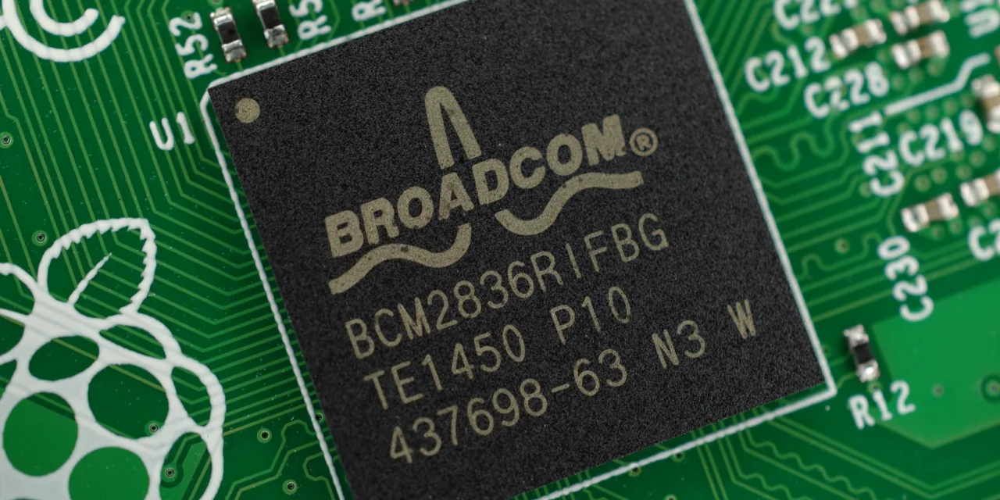

브로드컴 주주가 지금 가장 궁금해할 질문은 “AI 반도체 매출이 얼마나 더 커지느냐”만은 아닙니다. 더 중요한 질문은 이 매출이 소수 대형 고객의 주문에 그치지 않고, VMware에서 나오는 소프트웨어 현금흐름과 함께 오래가는 주주 가치로 바뀌느냐입니다. 브로드컴은 엔비디아처럼 범용 그래픽처리장치를 앞세운 회사가 아닙니다. 대형 고객이 원하는 워크로드에 맞춰 AI ASIC을 설계하고, 데이터센터 네트워킹과 기업 인프라 소프트웨어까지 붙여 현금흐름을 만드는 회사에 가깝습니다.
브로드컴의 FY2026 2분기 실적 발표에서 전체 매출은 221억 8,700만 달러였습니다. AI 반도체 매출은 108억 달러였고, 잉여현금흐름은 102억 6,200만 달러였습니다. 회사는 FY2026 3분기 매출 전망도 약 294억 달러로 제시했습니다. 숫자만 놓고 보면 강합니다. 다만 좋은 숫자가 이미 주가에 많이 반영된 종목일수록, 투자자는 성장률보다 성장의 질을 먼저 확인해야 합니다.
이번 글의 핵심은 브로드컴을 단순 AI 수혜주로 보지 않는 것입니다. 이 회사의 매력은 AI ASIC, 네트워킹, VMware 소프트웨어, 높은 현금흐름이 한 묶음으로 움직인다는 데 있습니다. 반대로 리스크도 같은 구조에서 나옵니다. 맞춤형 칩은 고객 집중이 크고, VMware는 가격 정책에 대한 고객 저항이 생길 수 있으며, 높은 잉여현금흐름은 이미 높은 기대를 정당화해야 합니다.
브로드컴의 AI는 범용 GPU가 아니라 고객 맞춤형 ASIC입니다

브로드컴의 AI 반도체를 볼 때 가장 먼저 구분해야 할 것은 범용 GPU와 맞춤형 ASIC의 차이입니다. 엔비디아 GPU는 넓은 개발자 생태계와 소프트웨어 표준을 팔고, AMD는 그 표준에 대한 두 번째 선택지를 만들려 합니다. 브로드컴은 조금 다릅니다. 대형 클라우드 고객이 특정 추론·학습·네트워크 구조에 맞춰 전력과 비용을 줄이려 할 때, 그 고객에게 맞는 실리콘을 설계하는 쪽에 강점이 있습니다.
맞춤형 ASIC은 성공하면 강력합니다. 고객의 워크로드에 맞게 설계되기 때문에 전력 효율, 단가, 시스템 구조에서 장점이 생길 수 있습니다. 또 한 번 설계가 들어가면 다음 세대 프로젝트로 이어질 가능성도 있습니다. 하지만 이 장점은 곧 리스크이기도 합니다. 고객 수가 많지 않고, 고객의 설계 방향이 바뀌면 매출 시점도 흔들립니다. 투자자가 AI 반도체 매출 108억 달러를 볼 때 고객 수, 프로그램 지속성, 다음 세대 설계 반복 여부를 함께 확인해야 하는 이유입니다.
브로드컴 주가가 강하게 반응하려면 단순히 “AI 매출이 늘었다”가 아니라 “AI ASIC 매출이 여러 고객과 여러 세대로 반복된다”는 확신이 필요합니다. 맞춤형 칩은 발표보다 양산 전환이 중요하고, 양산보다 다음 세대 반복이 더 중요합니다. 이 반복성이 보이면 브로드컴은 엔비디아와 다른 방식으로 AI 인프라 예산을 가져갈 수 있습니다. 반복성이 약하면 높은 성장률에도 할인받을 수 있습니다.
VMware는 비용 절감 대상이 아니라 현금흐름의 방어선입니다
관련 영상
AI 호재에도 15% 폭락한 브로드컴, 시장이 실망한 이유는?
브로드컴을 반도체 회사로만 보면 VMware 인수의 의미를 놓치기 쉽습니다. VMware는 기업의 서버 가상화, 클라우드 전환, 프라이빗 클라우드 운영과 연결된 인프라 소프트웨어입니다. Broadcom은 과거에도 인수한 소프트웨어 자산에서 비용 구조를 빠르게 정리하고 현금흐름을 키우는 방식으로 평가를 받아왔습니다. 그래서 VMware는 단순히 매출을 더한 인수가 아니라 브로드컴의 이익 구조를 바꾸는 축입니다.
소프트웨어 매출은 반도체보다 반복성이 높고, 고객이 한 번 도입한 인프라를 쉽게 바꾸지 않는다는 장점이 있습니다. 이 점은 AI 반도체의 고객 집중 리스크를 어느 정도 완충합니다. AI ASIC 주문이 분기별로 흔들려도 VMware 계약 갱신과 기업 인프라 소프트웨어 현금흐름이 유지되면, 브로드컴은 다른 고성장 반도체주보다 방어력이 커집니다. FY2026 2분기 잉여현금흐름 102억 6,200만 달러는 이 방어력을 보여주는 숫자입니다.
다만 VMware에는 별도의 확인 포인트가 있습니다. 인수 이후 가격 정책, 제품 묶음 판매, 구독 전환 방식이 고객에게 부담으로 느껴질 수 있습니다. 고객이 단기간에는 바꾸기 어렵더라도, 장기적으로 대체 솔루션을 찾기 시작하면 소프트웨어 프리미엄은 낮아질 수 있습니다. 브로드컴 주주는 VMware를 “좋은 현금흐름”으로만 보지 말고, 고객 유지와 가격 수용도가 유지되는지 봐야 합니다.
고객 집중은 브로드컴의 가장 큰 장점이자 가장 큰 약점입니다
브로드컴의 맞춤형 AI 반도체는 대형 고객을 깊게 파고드는 사업입니다. 이 모델은 일반적인 범용 제품보다 고객과의 결속력이 강합니다. 고객이 원하는 사양을 맞추고, 데이터센터 시스템 안에 들어가고, 다음 세대 설계까지 이어지면 매출의 가시성이 커집니다. 그래서 시장은 브로드컴을 AI 인프라의 핵심 공급사로 봅니다.
하지만 같은 이유로 고객 집중 리스크도 큽니다. 대형 고객 몇 곳이 주문을 늦추거나 자체 칩 전략을 바꾸면, 성장률은 빠르게 식을 수 있습니다. 또 고객의 협상력이 강해지면 높은 매출에도 마진이 압박받을 수 있습니다. 맞춤형 반도체는 “고객을 잡았다”는 사실보다 “고객이 몇 세대나 반복해서 맡기느냐”가 더 중요합니다. 브로드컴의 AI 반도체 매출을 볼 때 다음 분기 숫자보다 세대별 지속성을 봐야 하는 이유입니다.
여기서 마벨과 AMD를 함께 보면 구조가 더 선명해집니다. 마벨은 맞춤형 실리콘과 광연결에 더 직접적으로 노출되어 있지만, 브로드컴보다 소프트웨어 현금흐름 방어선은 약합니다. AMD는 범용 GPU 대안으로 대형 고객을 넓히려 하지만, ROCm과 소프트웨어 전환 비용을 넘어야 합니다. 브로드컴은 이 둘과 달리 맞춤형 ASIC과 VMware를 동시에 갖고 있습니다. 이 조합이 장점이 되려면 고객 집중을 현금흐름과 계약 지속성으로 흡수해야 합니다.
주가 전망은 AI 매출보다 잉여현금흐름의 질에서 갈립니다
브로드컴은 이미 큰 회사이고, 단순히 매출이 늘었다는 이유만으로 계속 재평가되기는 어렵습니다. 시장은 AI 반도체 매출 108억 달러와 FY2026 3분기 매출 전망 294억 달러를 봅니다. 동시에 투자자는 그 숫자가 얼마나 높은 마진과 잉여현금흐름으로 남는지도 봅니다. 좋은 매출은 주가를 올릴 수 있지만, 좋은 현금흐름은 높은 밸류에이션을 오래 버티게 합니다.
브로드컴의 강점은 반도체와 소프트웨어가 모두 현금흐름으로 연결될 가능성이 있다는 점입니다. AI ASIC은 성장률을 만들고, 네트워킹 반도체는 데이터센터 확장의 길목을 잡고, VMware는 반복 소프트웨어 매출을 제공합니다. 이 세 가지가 동시에 작동하면 브로드컴은 AI 테마주라기보다 AI 인프라 현금흐름 기업으로 평가받을 수 있습니다.
반대로 주가가 흔들리는 시나리오도 분명합니다. 첫째, AI 반도체 매출이 특정 고객과 특정 프로젝트에 과도하게 묶여 있다는 우려가 커지는 경우입니다. 둘째, VMware 고객이 가격 정책에 불만을 보이고 장기 이탈 조짐이 생기는 경우입니다. 셋째, 좋은 실적에도 이미 기대가 너무 높아 추가 상승 여력이 제한되는 경우입니다. 브로드컴은 좋은 회사일수록 기대치 관리가 중요한 종목입니다.
앞으로 확인할 숫자는 네 가지입니다
첫째는 AI semiconductor revenue입니다. 단순 성장률보다 고객 수와 프로그램 지속성을 확인해야 합니다. 둘째는 VMware 고객 유지와 가격 수용도입니다. 소프트웨어 매출이 좋아도 고객 불만이 쌓이면 장기 프리미엄은 낮아집니다. 셋째는 free cash flow입니다. 브로드컴의 장점은 성장주처럼 말하면서도 실제 현금을 만드는 데 있으므로, 잉여현금흐름이 핵심입니다. 넷째는 네트워킹 반도체 수요입니다. AI 데이터센터는 가속기만으로 돌아가지 않고, 스위칭과 고속 연결이 함께 커져야 합니다.
브로드컴을 좋게 보는 투자자는 AI ASIC과 VMware가 서로 다른 사이클을 보완한다고 볼 수 있습니다. AI 반도체가 성장률을 만들고, VMware가 현금흐름의 바닥을 받치며, 네트워킹 반도체가 데이터센터 병목을 잡는 구조입니다. 이 해석이 맞으면 브로드컴은 엔비디아와 다른 방식의 AI 인프라 핵심주가 됩니다.
하지만 보수적으로 보는 투자자는 고객 집중과 높은 기대치를 먼저 봐야 합니다. 맞춤형 칩은 고객이 적고, 소프트웨어는 가격 정책에 민감하며, 이미 시장은 브로드컴을 상당히 좋은 회사로 평가하고 있습니다. 그래서 결론은 단순한 매수·매도보다 점검표에 가깝습니다. 브로드컴은 AI 매출이 커지는 회사가 맞습니다. 다만 주주에게 더 중요한 것은 그 AI 매출이 VMware 현금흐름과 함께 얼마나 오래, 얼마나 높은 마진으로, 얼마나 넓은 고객 기반에서 반복되느냐입니다.